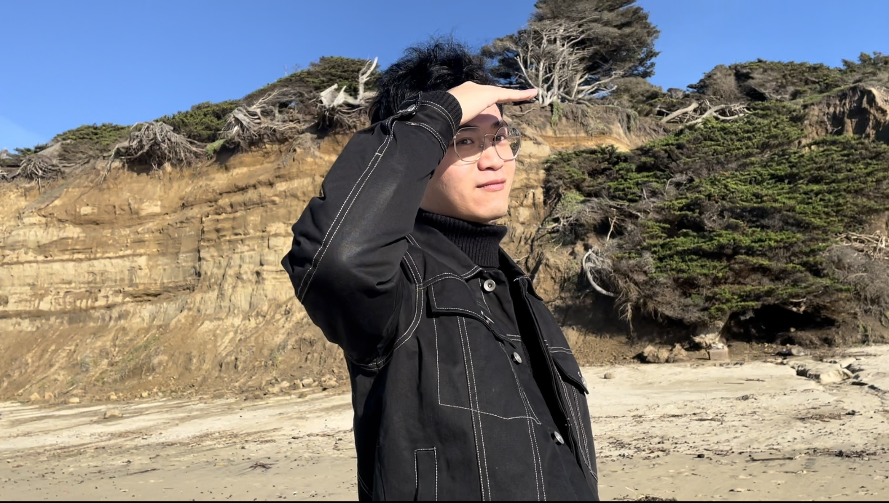

DS4CABS · 2026 Intern

About
I am a Master’s student in Statistics at San José State University with strengths in machine learning, data analysis, and AI-driven solution design. I have experience using Python, R, and SQL to analyze data, build predictive models, and generate actionable insights. In addition, I am interested in designing and developing agentic AI systems that support automation, reasoning, and decision-making. My goal is to combine statistical rigor, machine learning, and AI agents to solve real-world problems in healthcare, clinical research, and biopharma. I am excited to further develop these skills through hands-on experience in data science applied to drug discovery and development.
Program interests
- Data-science directions: Real-World Evidence Data Analytics, Biostatics, Market Analysis and Forecasting, Clinical Trial Design and Analysis, Agentic AI and LLM Applications
- Drug-development stage: Agentic AI for Clinical/Marketing Analytics
- Programming level: Expert
- Tools and platforms: LangChain (https://www.langchain.com/), watsonx Orchestrate